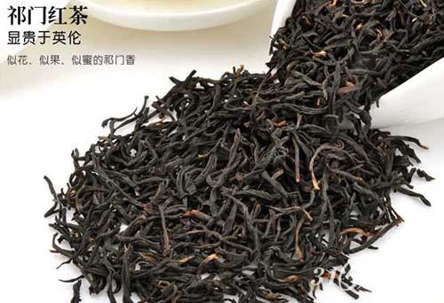
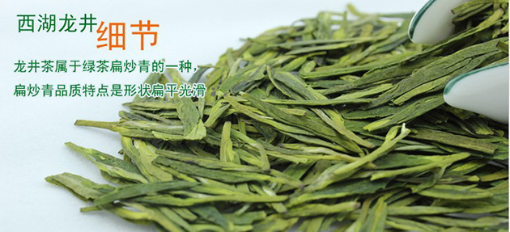
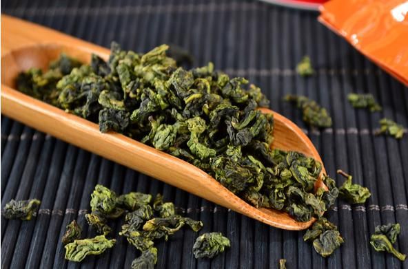
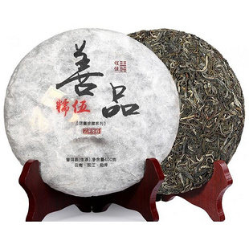

中国现代名茶品目
中国现代名茶有数百种之多，根据其历史分析，有下列三种情况：有一部分属传统名茶，如西湖龙井、庐山云雾、洞庭碧螺春、黄山毛峰、太平猴魁、恩施玉露、信阳毛尖、六安瓜片、屯溪珍眉、老竹大方、桂平西山茶、君山银针、云南普洱茶、苍梧六堡茶、政和白毫银针、白牡丹、安溪铁观凤凰水仙、闽北水仙、武夷岩茶、祁门红茶等；
另一部分是恢复历史名茶，也就是说历史上曾有过这类名茶，后来未能持续生产或已失传的，经过研究创新，恢复原有的茶名。如休宁松罗、涌溪火青、敬亭绿雪、九华毛峰、龟山岩绿、蒙顶甘露、仙人掌茶、天池 毫、贵定云雾、青城雪芽、蒙顶黄芽、阳羡雪芽、鹿苑毛尖、霍山黄芽、顾渚紫笋、径山茶、雁荡毛峰、日铸雪芽、金奖惠明、金华举岩、东阳东白等等；
还有大部分是属于新创名茶，如婺源眉、南京雨花茶、无锡毫茶、茅山青峰、天柱剑毫、岳西翠兰、齐山翠眉、望府银毫、临海蟠毫、千岛玉叶、遂昌银猴、都匀毛尖、高桥银峰、金水翠峰、永川秀芽、上饶白眉、湄江翠片、安化松针、遵义毛峰、文君绿茶、峨眉毛峰、雪芽、雪青、仙台大白、早白尖红茶、黄金桂、秦巴雾毫、汉水银梭、八仙云雾、南糯白毫、午子仙毫等等。
近年来，全国各茶区十分重视名茶的开发研究，新创名茶层出不穷，加之全国各地各种名茶评比活动，诸如评比会、斗茶会、展评会、博览会、品尝会等等，更促进了名茶生产的发展。现就各主要产茶省生产的名茶品目及各种名茶在国内外获奖情况作一简要介绍。
各产茶省主要名茶品目
安徽省：
红茶有祁门的祁红；绿茶有休宁、歙县的屯绿，黄山的黄山毛峰、黄山银钩，六安的瓜片、齐山名片，太平的太平猴魁，休宁的休宁松萝，泾县的涌溪火青、泾县特尖，青阳的黄石溪毛峰，歙县的老竹大方、绿牡丹，宣城的敬亭绿绿雪、天湖凤片、高峰去雾茶，金寒的齐山翠眉、齐山毛尖，舒城的兰花茶，桐城的天鹅香 、桐城小花，九华山的闵园毛峰，绩溪的金山时茶，休宁的白岳黄芽、 洲茶，潜山的天柱剑毫，岳西的翠兰，宁国的黄花云尖，霍山的翠芽，庐江的白云春毫等；黄茶有皖西黄大黄等。

浙江省：
绿茶有杭州的西湖龙井、莲芯、雀舌、莫干黄芽，天台的华顶云雾，嵊县的前岗白、平水珠茶，兰溪的毛峰，建德的苞茶，长兴的顾渚紫笋，景宁的金奖惠明茶，乐清的雁荡毛峰，天目山的天目青顶，普沱的佛茶，淳安的大方、千岛玉叶、鸠坑毛尖，象山的珠山茶，东阳的东白春芽、太白顶芽，桐庐的天尊贡芽，余姚的瀑布茶、仙，绍兴的日铸雪芽，安吉的白片，金华的双龙银针，婺州举岩、翠峰，开化的龙顶，嘉兴的家园香 ，临海的云峰、蟠毫，余杭的径山茶，遂日报银猴，盘安的云峰，江山的绿牡丹，松阳的银猴，仙居的碧绿，泰顺的香菇寮白毫，富阳的岩顶，浦江的春毫，宁海的望府银毫，诸暨的西施银芽等。黄茶有温州黄汤。红茶有杭州的九曲红梅。

江西省：
绿茶有庐山的庐山云雾，遂川的狗牯脑茶，婺源的眉、大鄣山云雾茶、珊厚香茶、灵岩剑峰、梨园茶、天舍厅峰，井岗翠绿，上饶的仙台大白、白眉，南城的麻姑茶，修水的双井绿、眉峰云雾、凤凰舌茶，临川的竹叶青，宁都的小布岩茶、翠微金精茶、太沽白毫，安远的和雾茶，兴国的均福云雾茶，南昌的梁渡银针、白虎银毫、前岭银毫，吉安的龙舞茶，上犹的梅岭毛尖，永新的崖雾茶，铅山的苦甘香，遂川的羽绒茶、圣绿，定南的天花茶，丰城的罗峰茶、周打铁茶，高安的瑞州黄檗茶，永修的攒林茶，金溪的云林茶，安远的九龙茶，宜丰的黄檗茶，泰和蜀口茶，南康的窝坑茶，石城的通天岩茶，吉水的黄狮茶，玉山的三清云雾等。红茶有修水的宁红。
四川省：
绿茶有名山的蒙顶茶、蒙山甘露、蒙山春露、万春银叶、玉叶长春，雅安的峨眉毛峰、金尖茶、雨城银芽、雨城云雾、雨城露芽，灌县的青城雪芽，永川的秀芽，邛崃的文君绿茶，峨眉山的峨芯、竹叶青，雷波的黄郎毛尖，达县的三清碧兰，乐山的沫若香、重庆的巴山银芽、缙云毛峰、大足松 等。红茶有宜宾的早白尖工夫红茶，南川的大叶红碎茶。紧压茶有重庆沱茶。
江苏省：
绿茶有宜兴的阳羡雪芽、荆溪云片，南京的雨花茶，无锡的二泉银毫、无锡毫茶，溧阳的南山寿眉、前峰雪莲，江宁的翠螺、梅花茶，苏州的碧螺春，金坛的誉舌、茅麓翠峰、茅山青峰，连云港的花果山云雾茶，镇江的金山翠芽等。
湖北省：
绿茶有恩族的玉露，宜昌的邓村绿茶、峡州碧峰、金岗银针，随州的车云山毛尖、棋盘山毛尖、云雾毛尖，当阳的仙人掌茶，大梧的双桥毛尖，红安的天台翠峰，竹溪的毛峰，宜都的熊洞云雾，鹤峰的容美茶，武昌的龙泉茶、剑毫，咸宁的剑春茶、莲台龙井、白云银毫、翠蕊，保康的九皇云雾，蒲圻的松峰茶，隆中的隆中茶，英山的长冲茶，麻城的龟山岩绿，松滋的碧涧茶，兴山的高岗毛尖，保康的银芽等。
湖南省：
绿茶有长沙的高桥银峰、湘波绿、河西园茶、东湖银毫、岳麓毛尖，郴县的五盖山米茶、郴州碧云，江华的毛尖，桂东的玲珑茶，宜章的骑田银毫，永兴的黄竹白毫，石太的毛尖、狮口银芽，大庸的毛尖、青岩翠、龙虾茶，沅陵的碣滩茶、官庄毛尖，岳阳的洞庭春、君山毛尖，石门的牛抵茶，临湘的白石毛尖，安化的安化松针，衡山的南岳云雾茶、岳北大白，韶山的韶峰，桃江的雪峰毛尖，保靖的保靖岗针，慈利的甑山银毫，零陵的凤岭容诸笋茶，华容的终南毛尖，新华的月芽茶等。
福建省：
乌龙茶有崇安武夷山的武夷岩茶，包括武夷水仙、大红袍、肉桂等，安溪的铁观音、黄金桂、色种等，崇安、建瓯的龙须茶，永春的佛手，诏安的八仙茶等。绿茶有南安的石亭绿，罗源的七境堂绿茶，龙岩的斜背茶，宁德的天山绿茶，福鼎的莲心茶等。白茶有政和、福鼎的白毫银针、白牡丹，福安的雪芽等。花茶有神州的茉莉花茶，还有茉莉银毫、茉莉春风、茉莉雀舌毫等。红茶有福鼎的白琳工夫，福安的坦洋工夫，崇安的正山小种等。

安溪铁观音
云南省：
红茶有凤庆、勐海的滇红工夫红茶、云南红碎茶。黑茶有西双版纳、思茅的普洱茶。紧压茶有下关的云南沱茶。绿茶有勐海的南糯白毫、云海白毫、竹筒香茶，宜良的宝洪茶，大理的苍山雪绿，黑江的云针，绿春的玛玉茶，牟定的化佛茶，大关的翠华茶等。

普洱茶茶饼
广东省：
乌龙茶有潮州的凤凰单枞、凤凰乌龙、凤凰水仙，还有岭头单枞、石古坪乌龙、大叶奇兰等。红茶有英德红茶、荔枝红茶、玫瑰红茶等。绿茶有高鹤的古劳茶、信宜的合箩茶等。
海南省：
南海、通什、岭头等的海南红茶。
广西壮族自治区：
绿茶有桂平的西山茶，横县的南山白毛茶，凌云的凌云白毫，贺县的开山白毫，昭平的象横云雾，桂林的毛尖，贵港的覃塘毛尖等。花茶有桂北的桂花茶。红茶有广西红碎茶，黑茶有苍梧六堡茶。
河南省：
绿茶有信阳的信阳毛尖，固始的仰天雪绿，桐柏的太白银毫等。
山东省：
绿茶有日照的雪青、冰绿等。
贵州省：
绿茶有贵定的贵定云雾，都匀的都云毛尖，湄潭的湄江翠片、遵义毛峰，大方的海马宫茶，贵阳的羊艾毛峰，平坝的云针绿茶等。
陕西省：
绿茶有西乡的午子仙毫，南郑的汉水银梭，镇巴的秦巴雾毫，紫阳的紫阳毛尖、紫阳翠峰，平利的八仙云雾等。
台湾省：
乌龙茶有南投的冻顶乌龙，台北、花莲的包种茶等。